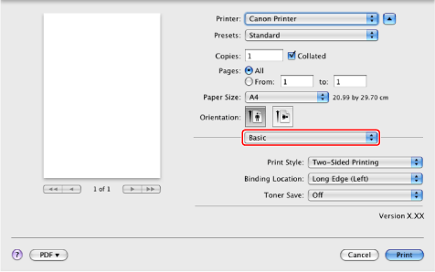
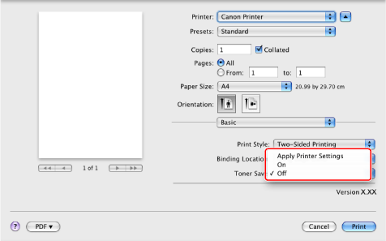

Printing a Document in Toner Save Mode
You can print a document in toner save mode. This mode is useful for proofreading.
1.
From the [File] menu of the application software, select [Print].
The [Print] dialog box is displayed.
2.

3.
Select [On] for [Toner Save].

4.
Click [Print].